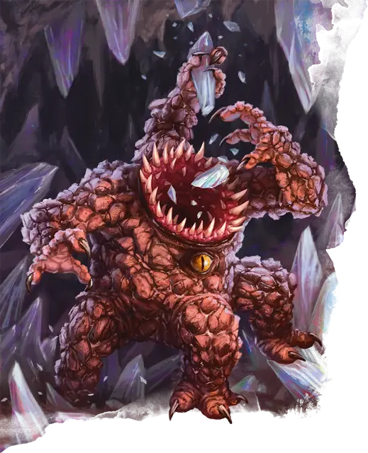

Зорн
Xorn
Средний Элементаль, Нейтральный

Класс Защиты 19 Инициатива +0 (10)
Хиты 84 (8к8 + 48)
Скорость 20 футов, Копания 20 футов
| мод | спас | ||
|---|---|---|---|
| СИЛ | 17 | +3 | +3 |
| ЛОВ | 10 | +0 | +0 |
| ТЕЛ | 22 | +6 | +6 |
| мод | спас | ||
|---|---|---|---|
| ИНТ | 11 | +0 | +0 |
| МДР | 10 | +0 | +0 |
| ХАР | 11 | +0 | +0 |
Иммунитеты Яд; Окаменевший, Отравленный, Парализованный
Чувства пассивное Восприятие 16, Чувство вибрации 60 футов
Языки Первичный (Терран)
Опасность 5 (1 800 опыта; БВ +3)
Особенности
Скольжение сквозь твердь. Зорн может перемещаться сквозь немагические необработанные землю и камень. При этом зорн не тревожит материал, через который перемещается.
Нюх на сокровища. Зорн может определить местонахождение драгоценных металлов и камней в пределах 60 футов от себя.
Действия
Мультиатака. Зорн совершает одну атаку Укусом и три атаки Когтями.
Укус. Бросок рукопашной атаки: +6, досягаемость 5 фт. Попадание: 17 (4к6 + 3) Колющего урона.
Когти. Бросок рукопашной атаки: +6, досягаемость 5 фт. Попадание: 8 (1к10 + 3) Рубящего урона.
Бонусные действия
Налёт. Зорн перемещается на расстояние вплоть до своей Скорости или Скорости копания по прямой к цели, которую чувствует.
Бонус мастерства +3
Среда обитания Подземье, Стихийный план Земли
Сокровища Любые
Зорн
Пожиратель сокровищ
Зорны бродят по Стихийному плану Земли в поисках любимой пищи: самоцветов, кристаллов или жил цветных металлов. Оказавшись в кулинарной пустыне Материального плана, они рыщут в подземных глубинах, поедают все редкие самоцветы и руды, которые смогут найти, и с тоской вспоминают бесконечное пиршество родного стихийного царства. Из-за этого зорны могут вступить в конфликт с шахтёрами или другими существами, прячущими свои сокровища под землёй.
Тела зорнов напоминают треугольную пирамиду, на каждой грани которой расположены глаз, рука и нога, а на вершине — зубастая пасть, перемалывающая как минералы, так и опасных тварей. Они также способны перемещаться сквозь землю и не оставляют после себя ни тоннелей, ни других следов.
Зорны одержимы едой и всегда находятся в предвкушении следующей трапезы. Их почти не интересуют живые существа, и они стараются по возможности не причинять им вред. Зорнам известно, что существуют и другие искатели подземных богатств, и они готовы заплатить им за свой обед. В обмен на закуску из самоцветов, монет или магического металла эти существа рады поделиться своими знаниями о Подземье. Однако разозлённые или голодные зорны могут применить силу, чтобы заполучить вожделенное блюдо.
Совершите бросок по таблице «Любимая еда зорна» для вдохновения или выберите сами любимое лакомство зорна.
Любимая еда зорна
| 1к8 | Зорн жаждет вкусить… |
| 1 | Адамантин или мифрил. |
| 2 | Монеты давно павшей империи. |
| 3 | Ископаемые останки или окаменелое дерево. |
| 4 | Самоцвет — часть магического предмета. |
| 5 | Краеугольный камень большой арки или моста. |
| 6 | Части галеб дура или каменного голема. |
| 7 | Кусок метеора или луны. |
| 8 | Камень на вершине горного пика. |